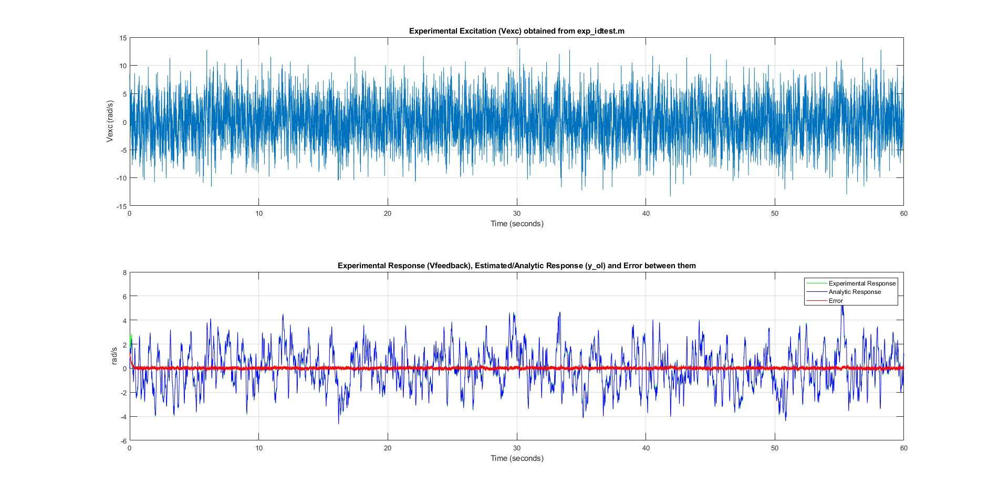
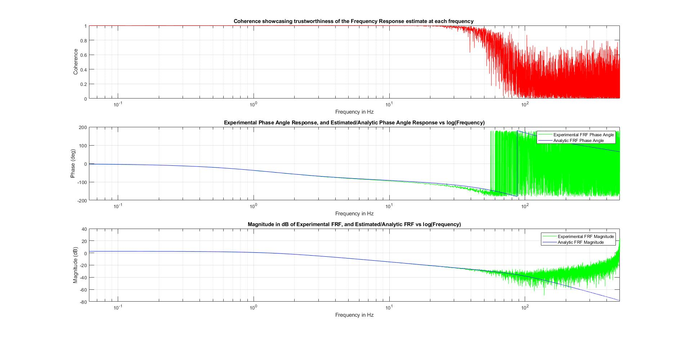
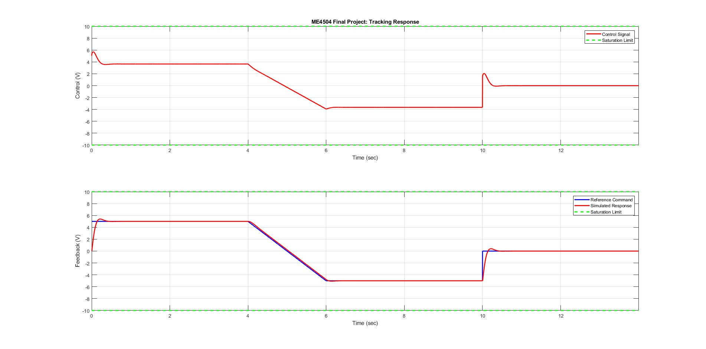
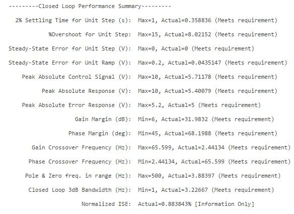
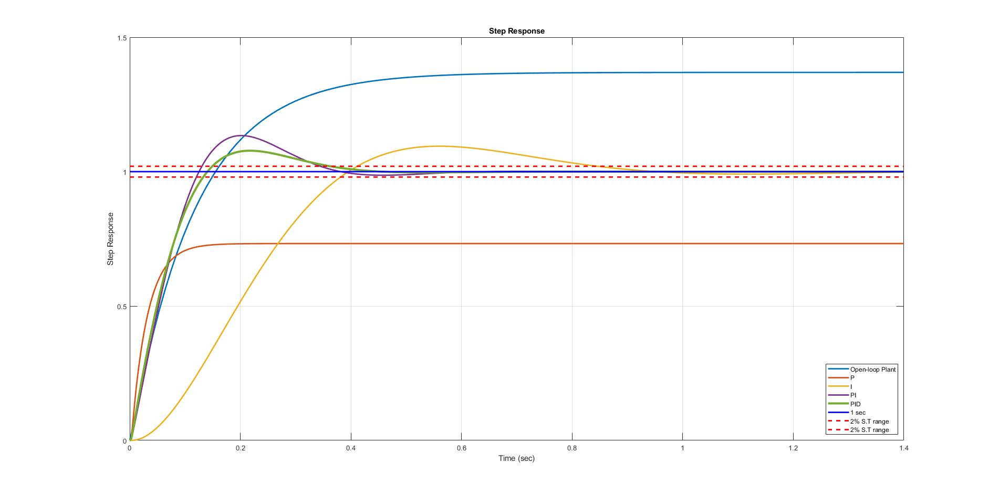

Controls
Get in Touch
EXIT×
Autonomous Underwater Vehicle
Designed a state-feedback control system that can control the H-AUV (Autonomous Underwater Vehicle) depth and longitudinal position.
Role
- Modeled MIMO dynamic systems using state-space techniques.
- Analytically and numerically solved for the dynamic response of any linear dynamic system and relate the response to the state-space system description.
- Analyzed the open-loop and closed-loop stability of any state-space representation.
- Designed linear state-feedback controllers using pole placement techniques.
- Designed optimal linear state-feedback controllers using Linear Quadratic Regulator (LQR) technique.
- Designed linear output-feedback controllers using a Luenberger Observer state estimator.
- Designed optimal linear state-feedback controllers using Linear Quadratic Integral (LQI) technique.
Languages Used
- Matlab
- Latex
EXIT×
Inverted Pendulum On A Cart
Stabilized the full nonlinear system of an Inverted Pendulum on a Cart using combination of Kalman Filter and LQR controller.
Role
- Modeled MIMO dynamic systems using state-space techniques.
- Numerically Linearized the full nonlinear system.
- Designed linear state-feedback controller using pole placement techniques.
- Designed optimal linear state-feedback controllers using Linear Quadratic Regulator (LQR) technique.
- Designed Kalman Filter, which is an optimal full-state estimator, given Gaussian white noise disturbances and measurement noise.
- Designed optimal linear state-feedback controllers using Linear Quadratic Regulator (LQR) technique.
- Combined the optimal full-state feedback LQR with the optimal full-state estimator (LQE or Kalman Filter) to obtain the sensor-based linear quadratic Gaussian (LQG) controller.
Languages Used
- Matlab
- Latex
EXIT×

DC Servo Motor





Designed a feedback compensator meeting performance specifications for DC Servo Motor model and thus evaluating stability margins.
Role
- Constructed a Matlab LTI object using an analytic motor model and parameter values from manufacturers data sheets.
- Estimated the open-loop frequency response from experimental time-domain data.
- Validated the Matlab model by comparing the time domain and frequency domain responses.
- Designed a feedback compensator to meet time domain and frequency domain performance specifications.
- Implemented the compensator design as an LTI object.
- Evaluated stability margins and performance metrics for your design.
Languages Used
- Matlab
- Latex